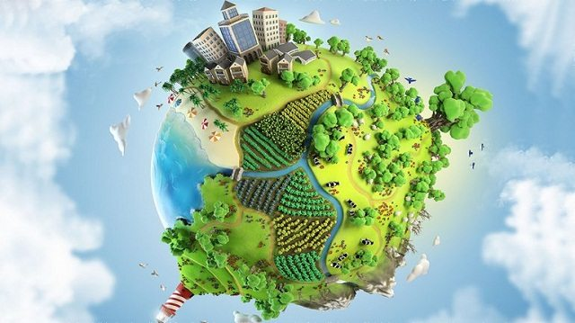
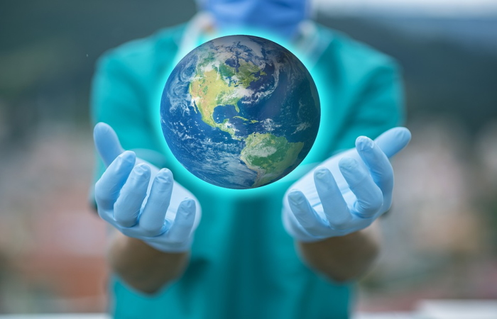

El medio ambiente es el hogar donde todos vivimos, el planeta entero donde gozamos de los bienes naturales. De donde se extrae los alimentos, tanto de la tierra como del mar y ríos, |
 |
La reducción de gases de efecto invernadero o la disminución del tráfico ilegal de fauna salvaje son algunos de los ejemplos que pueden contabilizarse de los beneficios que está dejando la pandemia del coronavirus a la que se está enfrentando el mundo actualmente para el medio ambiente. |
 |
La pandemia de la COVID-19 pone de relieve las interrelaciones entre nuestros sistemas naturales y sociales: la resistencia de la sociedad depende de un sistema de apoyo ambiental resistente. |
 |
 |